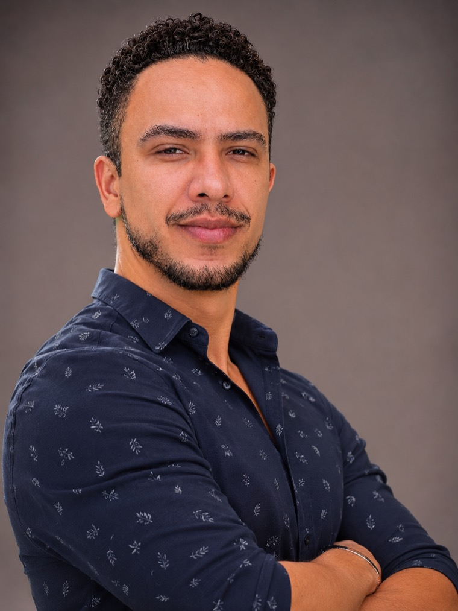

Diagnóstico
Raio-x do acervo, dos riscos e das prioridades.
Seu arquivo guarda muito mais que documentos: ele protege direitos, sustenta decisões e preserva a história da sua organização.
Gestão documental feita por arquivista, do papel ao digital.
Documentos sem classificação, dados pessoais sem controle e descarte sem critério podem comprometer a rotina, a rastreabilidade e a memória da sua organização.
Soluções pensadas para a realidade do seu acervo, da organização física à continuidade do acesso digital.
Raio-x do acervo, dos riscos e das prioridades.
O que guardar, onde e por quanto tempo.
Arquivo físico limpo, ordenado e inventariado.
O que digitalizar e qual sistema escolher.
Prazo para cada dado e eliminação com termo.
Equipe e manual para manter tudo em ordem.
Conhecemos o acervo e as pessoas.
Definimos regras, prioridades e cronograma.
Organizamos e treinamos a equipe.
Ajustes para o resultado durar.
Palestras e minicursos presenciais ou online, ajustados ao setor e ao porte da empresa.
Para abrir o tema com toda a empresa.
Um tema a fundo, com material e exercício prático.
Os cinco temas, com avaliação de aprendizagem.
O valor depende do formato e do número de pessoas.
Montar a capacitação da equipeA Nexora nasce da experiência de seu fundador, Edson Emmanuel Santos, na Arquivologia e da sua dedicação à gestão documental, à gestão eletrônica de documentos e à preservação digital.
Combinamos conhecimento arquivístico e tecnologia para atender empresas, propriedades rurais e instituições públicas. Cada projeto considera a realidade do cliente, as características do acervo e os recursos disponíveis.
Organizar, proteger e tornar acessíveis os documentos e as informações de nossos clientes, com orientação arquivística e soluções tecnológicas adequadas às suas necessidades.
Ser reconhecida em Minas Gerais pela qualidade técnica e responsabilidade na gestão documental e preservação digital.
Responsabilidade com os documentos, ética e confidencialidade, rigor técnico, clareza, tecnologia com propósito, respeito à memória e conhecimento compartilhado.

Arquivista e responsável técnico
Bacharel em Arquivologia pela UFMG e em Comunicação Social, com formação em gestão de documentos pela Universitat Autònoma de Barcelona e cursando MBA em Preservação e Gestão de Documentos Digitais.
Atuou na Defensoria Pública da União, no Tribunal de Justiça e na Assembleia Legislativa de Minas Gerais. Pela CETEFE, coordenou equipes de conservação e digitalização em projeto do Arquivo Público do Estado de São Paulo. Na Tenax e na Sandvik, cuidou do controle de documentos técnicos de engenharia.
Registro de técnico de arquivo 0000248/MG.
Não necessariamente. O diagnóstico avalia o acervo e ajuda a definir o que faz sentido digitalizar.
O descarte é orientado pela classificação e pela tabela de temporalidade aplicável ao acervo, com documentação da eliminação.
Ela contribui para organizar prazos, acesso e tratamento dos documentos. Cada situação deve ser avaliada conforme a realidade da organização.
O prazo e o valor dependem do tamanho do acervo, das necessidades e do escopo. Converse com a Nexora para um diagnóstico.
Uma conversa para entender o seu acervo e seus próximos passos.
Chamar no WhatsApp